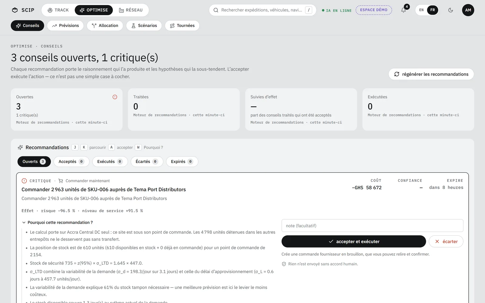
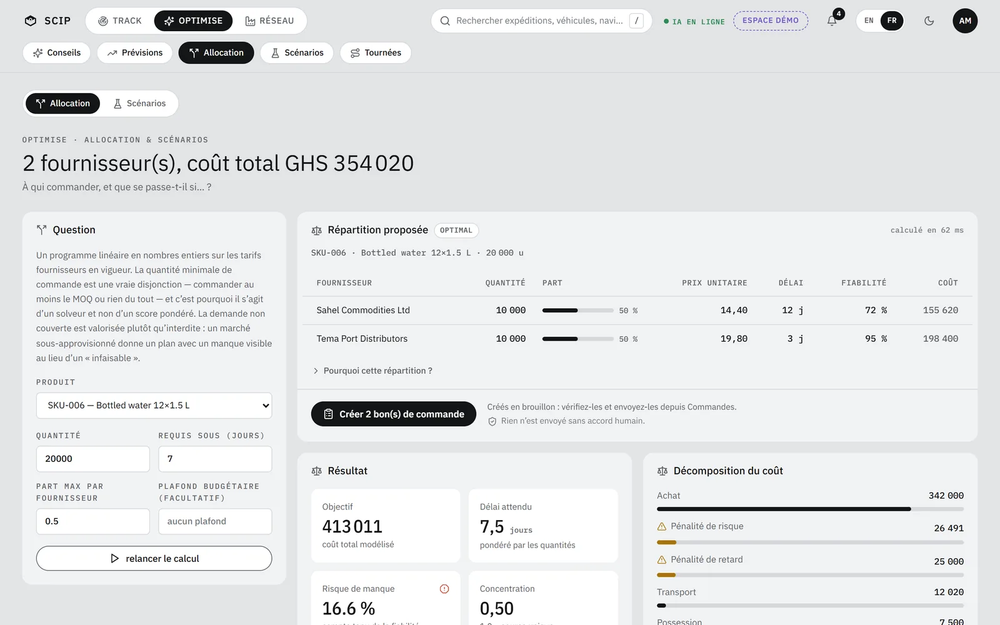
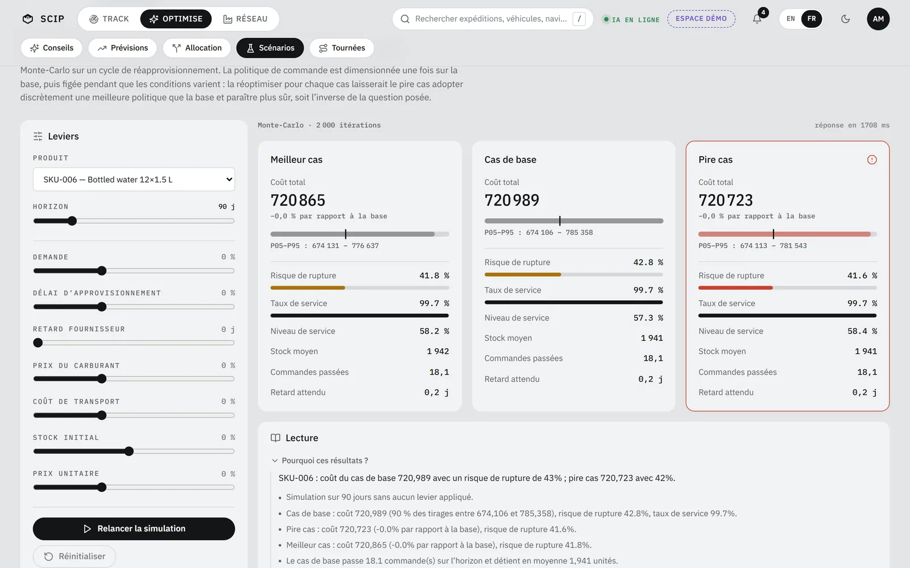

Tout tourne sur votre PC, moteur IA compris. S’il s’arrête, la barre affiche « IA hors ligne » ; le suivi et les stocks continuent.
01
Conseils
Chaque recommandation porte « Pourquoi cette recommandation ? » : un résumé, des raisons, des hypothèses. Deux boutons : « accepter et exécuter », « écarter ».
Dans la démo : 3 conseils ouverts, dont 1 critique. En tête : « Commander 2 963 unités de SKU‑006 auprès de Tema Port Distributors ». Première raison affichée : « Le calcul porte sur Accra Central DC seul : ce site est sous son point de commande. »

Optimise · Conseils données démo
02
Prévisions
Six modèles s’affrontent en validation glissante. La sélection se fait sur le WAPE, et le tableau montre celui de chaque modèle, pas seulement du vainqueur.
Dans la démo : SKU‑006, 9 102 unités attendues sur 30 jours ; « gradient boosting » retenu, WAPE 22,30.
Optimise · Prévisions données démo
03
Allocation
Vous donnez un produit, une quantité, un délai, une part maximale par fournisseur. SCIP répartit les volumes, en MILP.
Dans la démo : 20 000 unités du SKU‑006 sous 7 jours, part maximale 0,5 : 2 fournisseurs, coût total GHS 354 020.

Optimise · Allocation données démo
04
Scénarios
Un Monte‑Carlo, 2 000 itérations par défaut, compare le meilleur cas, le cas de base et le pire.
Dans la démo : SKU‑006, risque de rupture de 41,6 % dans le pire cas, 42,8 % dans le cas de base.

Optimise · Scénarios données démo
05
Tournées
Un dépôt, des arrêts, des véhicules : SCIP ordonne les arrêts en CVRP avec fenêtres horaires, et dit ce qu’il n’a pas pu desservir.
Dans la démo : dépôt WH‑ACC, 1 tournée, 5 arrêts, 3 non desservis. Distance : vol d’oiseau × 1,25 tant qu’aucun serveur OSRM n’est branché.
Optimise · Tournées données démo
Les dix moteurs : ETA avec incertitude, probabilité de retard, détection d’anomalies, prévision de demande, stock de sécurité et point de commande, score fournisseur, allocation, tournées, scénarios, score de risque.